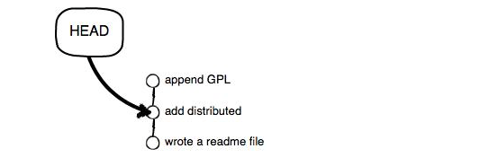
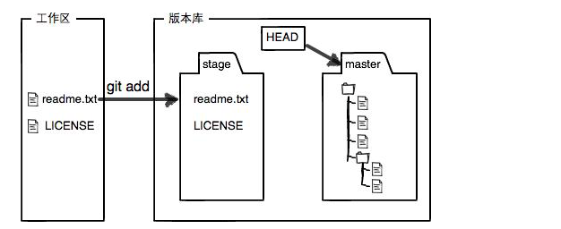

直接记录快照，而非差异比较。Git和其他版本控制系统的主要差别在于，Git只关心文件数据的整体是否发生变化，而大多数其他的系统则只关心文件内容的具体差异。这类系统(CVS，Subversion，perforce等等)每次纪录有哪些文件做了更新，以及都更新了哪些行的什么内容。
Git并不保存这些前后变化的差异数据。实际上，git更像是把变化的文件做快照后，记录在一个微型的文件系统中。每次提交更新时，它会纵览一遍所有文件的指纹信息并对文件做一快照，然后保存一个指向这次快照的索引为了提高性能，若文件没有变化，git不会再次保存，而只对上次保存的快照做一链接。

在Linux上安装Git
sudo apt-get install git
在Mac上安装Git
brew install git
通过git init命令把这个目录变成Git可以管理的仓库
用命git add告诉Git，把文件添加到仓库
$ git add readme.txt
用用命令git commit告诉Git，把文件提交到仓库
$ git commit -m "wrote a readme file"
[master (root-commit) cb926e7] wrote a readme file
1 file changed, 2 insertions(+)
create mode 100644 readme.txt
git commit命令，-m后面输入的是本次提交的说明，可以输入任意内容，当然最好是有意义的，这样你就能从历史记录里方便地找到改动记录。
为什么Git添加文件需要add，commit一共两步呢？因为commit可以一次提交很多文件，所以你可以多次add不同的文件，比如：
$ git add file1.txt
$ git add file2.txt file3.txt
$ git commit -m "add 3 files."
git status命令可以让我们时刻掌握仓库当前的状态
$ git status
# On branch master
# Changes not staged for commit:
# (use "git add <file>..." to update what will be committed)
# (use "git checkout -- <file>..." to discard changes in working directory)
#
# modified: readme.txt
#
no changes added to commit (use "git add" and/or "git commit -a")
知道了对readme.txt作了什么修改后，再把它提交到仓库就放心多了，提交修改和提交新文件是一样的两步，第一步是git add：
$ git add readme.txt
同样没有任何输出。在执行第二步git commit之前，我们再运行git status看看当前仓库的状态：
$ git status
# On branch master
# Changes to be committed:
# (use "git reset HEAD <file>..." to unstage)
#
# modified: readme.txt
#
git status告诉我们，将要被提交的修改包括readme.txt，下一步，就可以放心地提交了：
$ git commit -m "add distributed"
[master ea34578] add distributed
1 file changed, 1 insertion(+), 1 deletion(-)
提交后，我们再用git status命令看看仓库的当前状态：
$ git status
# On branch master
nothing to commit (working directory clean)
git log命令显示从最近到最远的提交日志。
如果嫌输出信息太多，看得眼花缭乱的，可以试试加上--pretty=oneline参数：
$ git log --pretty=oneline
3628164fb26d48395383f8f31179f24e0882e1e0 append GPL
ea34578d5496d7dd233c827ed32a8cd576c5ee85 add distributed
cb926e7ea50ad11b8f9e909c05226233bf755030 wrote a readme file
需要友情提示的是，你看到的一大串类似3628164...882e1e0的是commit id（版本号），和SVN不一样，Git的commit id不是1，2，3……递增的数字，而是一个SHA1计算出来的一个非常大的数字，用十六进制表示，而且你看到的commit id和我的肯定不一样，以你自己的为准。为什么commit id需要用这么一大串数字表示呢？因为Git是分布式的版本控制系统，后面我们还要研究多人在同一个版本库里工作，如果大家都用1，2，3……作为版本号，那肯定就冲突了。
好了，现在我们启动时光穿梭机，准备把readme.txt回退到上一个版本，也就是“add distributed”的那个版本，怎么做呢？
首先，Git必须知道当前版本是哪个版本，在Git中，用HEAD表示当前版本，也就是最新的提交3628164...882e1e0（注意我的提交ID和你的肯定不一样），上一个版本就是HEAD^，上上一个版本就是HEAD^^，当然往上100个版本写100个^比较容易数不过来，所以写成HEAD~100。
现在，我们要把当前版本“append GPL”回退到上一个版本“add distributed”，就可以使用git reset命令：
$ git reset --hard HEAD^
HEAD is now at ea34578 add distributed
还可以继续回退到上一个版本wrote a readme file，不过且慢，然我们用git log再看看现在版本库的状态：
$ git log
commit ea34578d5496d7dd233c827ed32a8cd576c5ee85
Author: Michael Liao <askxuefeng@gmail.com>
Date: Tue Aug 20 14:53:12 2013 +0800
add distributed
commit cb926e7ea50ad11b8f9e909c05226233bf755030
Author: Michael Liao <askxuefeng@gmail.com>
Date: Mon Aug 19 17:51:55 2013 +0800
wrote a readme file
最新的那个版本append GPL已经看不到了！好比你从21世纪坐时光穿梭机来到了19世纪，想再回去已经回不去了，肿么办？
办法其实还是有的，只要上面的命令行窗口还没有被关掉，你就可以顺着往上找啊找啊，找到那个append GPL的commit id是3628164...，于是就可以指定回到未来的某个版本：
$ git reset --hard 3628164
HEAD is now at 3628164 append GPL
Git的版本回退速度非常快，因为Git在内部有个指向当前版本的HEAD指针，当你回退版本的时候，Git仅仅是把HEAD从指向append GPL：

改为指向add distributed：

然后顺便把工作区的文件更新了。所以你让HEAD指向哪个版本号，你就把当前版本定位在哪。
现在，你回退到了某个版本，关掉了电脑，第二天早上就后悔了，想恢复到新版本怎么办？找不到新版本的commit id怎么办？
在Git中，总是有后悔药可以吃的。当你用$ git reset --hard HEAD^回退到add distributed版本时，再想恢复到append GPL，就必须找到append GPL的commit id。Git提供了一个命令git reflog用来记录你的每一次命令：
$ git reflog
ea34578 HEAD@{0}: reset: moving to HEAD^
3628164 HEAD@{1}: commit: append GPL
ea34578 HEAD@{2}: commit: add distributed
cb926e7 HEAD@{3}: commit (initial): wrote a readme file
Git和其他版本控制系统如SVN的一个不同之处就是有暂存区的概念。
就是你在电脑里能看到的目录，比如我的learngit文件夹就是一个工作区
工作区有一个隐藏目录.git，这个不算工作区，而是Git的版本库。
Git的版本库里存了很多东西，其中最重要的就是称为stage（或者叫index）的暂存区，还有Git为我们自动创建的第一个分支master，以及指向master的一个指针叫HEAD。

分支和HEAD的概念我们以后再讲。
前面讲了我们把文件往Git版本库里添加的时候，是分两步执行的：
因为我们创建Git版本库时，Git自动为我们创建了唯一一个master分支，所以，现在，git commit就是往master`分支上提交更改。
你可以简单理解为，需要提交的文件修改通通放到暂存区，然后，一次性提交暂存区的所有修改。
俗话说，实践出真知。现在，我们再练习一遍，先对readme.txt做个修改，比如加上一行内容：
Git is a distributed version control system.
Git is free software distributed under the GPL.
Git has a mutable index called stage.
然后，在工作区新增一个LICENSE文本文件（内容随便写）。
先用git status查看一下状态：
$ git status
# On branch master
# Changes not staged for commit:
# (use "git add <file>..." to update what will be committed)
# (use "git checkout -- <file>..." to discard changes in working directory)
#
# modified: readme.txt
#
# Untracked files:
# (use "git add <file>..." to include in what will be committed)
#
# LICENSE
no changes added to commit (use "git add" and/or "git commit -a")
Git非常清楚地告诉我们，readme.txt被修改了，而LICENSE还从来没有被添加过，所以它的状态是Untracked。
现在，使用两次命令git add，把readme.txt和LICENSE都添加后，用git status再查看一下：
$ git status
# On branch master
# Changes to be committed:
# (use "git reset HEAD <file>..." to unstage)
#
# new file: LICENSE
# modified: readme.txt
#
现在，暂存区的状态就变成这样了：
所以，git add命令实际上就是把要提交的所有修改放到暂存区（Stage），然后，执行git commit就可以一次性把暂存区的所有修改提交到分支。
$ git commit -m "understand how stage works"
[master 27c9860] understand how stage works
2 files changed, 675 insertions(+)
create mode 100644 LICENSE
一旦提交后，如果你又没有对工作区做任何修改，那么工作区就是“干净”的：
$ git status
# On branch master
nothing to commit (working directory clean)
现在版本库变成了这样，暂存区就没有任何内容了：

现在，假定你已经完全掌握了暂存区的概念。下面，我们要讨论的就是，为什么Git比其他版本控制系统设计得优秀，因为Git跟踪并管理的是修改，而非文件。
你会问，什么是修改？比如你新增了一行，这就是一个修改，删除了一行，也是一个修改，更改了某些字符，也是一个修改，删了一些又加了一些，也是一个修改，甚至创建一个新文件，也算一个修改。
为什么说Git管理的是修改，而不是文件呢？我们还是做实验。第一步，对readme.txt做一个修改，比如加一行内容：
$ cat readme.txt
Git is a distributed version control system.
Git is free software distributed under the GPL.
Git has a mutable index called stage.
Git tracks changes.
然后，添加：
$ git add readme.txt
$ git status
# On branch master
# Changes to be committed:
# (use "git reset HEAD <file>..." to unstage)
#
# modified: readme.txt
#
然后，再修改readme.txt：
$ cat readme.txt
Git is a distributed version control system.
Git is free software distributed under the GPL.
Git has a mutable index called stage.
Git tracks changes of files.
提交：
$ git commit -m "git tracks changes"
[master d4f25b6] git tracks changes
1 file changed, 1 insertion(+)
提交后，再看看状态：
$ git status
# On branch master
# Changes not staged for commit:
# (use "git add <file>..." to update what will be committed)
# (use "git checkout -- <file>..." to discard changes in working directory)
#
# modified: readme.txt
#
no changes added to commit (use "git add" and/or "git commit -a")
我们回顾一下操作过程：
第一次修改 -> git add -> 第二次修改 -> git commit
你看，我们前面讲了，Git管理的是修改，当你用git add命令后，在工作区的第一次修改被放入暂存区，准备提交，但是，在工作区的第二次修改并没有放入暂存区，所以，git commit只负责把暂存区的修改提交了，也就是第一次的修改被提交了，第二次的修改不会被提交。
提交后，用git diff HEAD -- readme.txt命令可以查看工作区和版本库里面最新版本的区别：
$ git diff HEAD -- readme.txt
diff --git a/readme.txt b/readme.txt
index 76d770f..a9c5755 100644
--- a/readme.txt
+++ b/readme.txt
@@ -1,4 +1,4 @@
Git is a distributed version control system.
Git is free software distributed under the GPL.
Git has a mutable index called stage.
-Git tracks changes.
+Git tracks changes of files.
第一次修改 -> git add -> 第二次修改 -> git add -> git commit
自然，你是不会犯错的。不过现在是凌晨两点，你正在赶一份工作报告，你在readme.txt中添加了一行：
$ cat readme.txt
Git is a distributed version control system.
Git is free software distributed under the GPL.
Git has a mutable index called stage.
Git tracks changes of files.
My stupid boss still prefers SVN.
在你准备提交前，一杯咖啡起了作用，你猛然发现了“stupid boss”可能会让你丢掉这个月的奖金！
既然错误发现得很及时，就可以很容易地纠正它。你可以删掉最后一行，手动把文件恢复到上一个版本的状态。如果用git status查看一下：
$ git status
# On branch master
# Changes not staged for commit:
# (use "git add <file>..." to update what will be committed)
# (use "git checkout -- <file>..." to discard changes in working directory)
#
# modified: readme.txt
#
no changes added to commit (use "git add" and/or "git commit -a")
你可以发现，Git会告诉你，git checkout -- file可以丢弃工作区的修改：
$ git checkout -- readme.txt
命令git checkout -- readme.txt意思就是，把readme.txt文件在工作区的修改全部撤销，这里有两种情况：
一种是readme.txt自修改后还没有被放到暂存区，现在，撤销修改就回到和版本库一模一样的状态；
一种是readme.txt已经添加到暂存区后，又作了修改，现在，撤销修改就回到添加到暂存区后的状态。
总之，就是让这个文件回到最近一次git commit或git add时的状态。
-
现在假定是凌晨3点，你不但写了一些胡话，还git add到暂存区了：
$ cat readme.txt
Git is a distributed version control system.
Git is free software distributed under the GPL.
Git has a mutable index called stage.
Git tracks changes of files.
My stupid boss still prefers SVN.
$ git add readme.txt
庆幸的是，在commit之前，你发现了这个问题。用git status查看一下，修改只是添加到了暂存区，还没有提交：
$ git status
# On branch master
# Changes to be committed:
# (use "git reset HEAD <file>..." to unstage)
#
# modified: readme.txt
#
Git同样告诉我们，用命git reset HEAD file可以把暂存区的修改撤销掉（unstage），重新放回工作区：
git reset HEAD readme.txt
Unstaged changes after reset:
M readme.txt
git reset命令既可以回退版本，也可以把暂存区的修改回退到工作区。当我们用HEAD时，表示最新的版本。
再用git status查看一下，现在暂存区是干净的，工作区有修改：
$ git status
# On branch master
# Changes not staged for commit:
# (use "git add <file>..." to update what will be committed)
# (use "git checkout -- <file>..." to discard changes in working directory)
#
# modified: readme.txt
#
no changes added to commit (use "git add" and/or "git commit -a")
还记得如何丢弃工作区的修改吗？
$ git checkout -- readme.txt
$ git status
# On branch master
nothing to commit (working directory clean)
在Git中，删除也是一个修改操作，我们实战一下，先添加一个新文件test.txt到Git并且提交：
$ git add test.txt
$ git commit -m "add test.txt"
[master 94cdc44] add test.txt
1 file changed, 1 insertion(+)
create mode 100644 test.txt
一般情况下，你通常直接在文件管理器中把没用的文件删了，或者用rm命令删了：
$ rm test.txt
这个时候，Git知道你删除了文件，因此，工作区和版本库就不一致了，git status命令会立刻告诉你哪些文件被删除了：
$ git status
# On branch master
# Changes not staged for commit:
# (use "git add/rm <file>..." to update what will be committed)
# (use "git checkout -- <file>..." to discard changes in working directory)
#
# deleted: test.txt
#
no changes added to commit (use "git add" and/or "git commit -a")
现在你有两个选择，一是确实要从版本库中删除该文件，那就用命令git rm删掉，并且git commit：
$ git rm test.txt
rm 'test.txt'
$ git commit -m "remove test.txt"
[master d17efd8] remove test.txt
1 file changed, 1 deletion(-)
delete mode 100644 test.txt
现在，文件就从版本库中被删除了。
另一种情况是删错了，因为版本库里还有呢，所以可以很轻松地把误删的文件恢复到最新版本：
$ git checkout -- test.txt
git checkout其实是用版本库里的版本替换工作区的版本，无论工作区是修改还是删除，都可以“一键还原”。